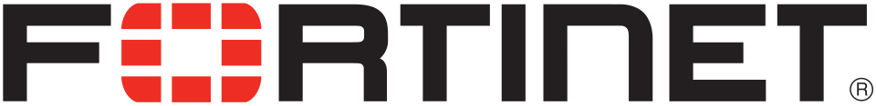

포티넷 Fortinet
포티넷(Fortinet)은 미국 서니베일에 본사를 두고 방화벽, 엔드포인트 보안, 침입 탐지 시스템 등 보안 솔루션을 개발하고 판매하는 사이버 보안 회사이다.
최종 업데이트

포티넷은 어떤 브랜드인가
포티넷은 물리·가상 방화벽을 중심으로 엔드포인트 보안, 침입 탐지, 무선 액세스 포인트, 샌드박스, 메시징 보안 등을 공급한다. 첫 제품 FortiGate를 기반으로 안티스팸과 안티바이러스 소프트웨어, SD-WAN, 클라우드 기능까지 사업 범위를 확장했다.
미국, 캐나다, 영국을 포함한 세계 여러 지역에 사무실을 운영한다. 2009년 11월에는 통합 위협 관리 시스템 시장의 15% 이상을 차지했으며, 2010년에는 IDC 기준 해당 시장에서 가장 큰 점유율을 기록했다.
여러 네트워크 보안 제품을 연결하는 Security Fabric과 AI·ML 기반 보안 서비스도 전개한다.
포티넷은 어떻게 시작되고 성장했나
켄 시와 마이클 시 형제는 2000년 Appligation, Inc.를 공동 설립했다. 회사는 이후 ApSecure를 거쳐 ‘Fortified Networks’에서 이름을 딴 현재의 브랜드로 사명을 변경했다.
2002년 첫 제품 FortiGate를 출시했으며, 2000년부터 2003년 초까지 1,300만 달러의 개인 투자를 유치했다. 2003년 캐나다, 2004년 영국에서 제품 유통을 시작했고 2004년까지 아시아, 유럽, 북아메리카에 사무실을 마련했다.
2009년 11월에는 기업 공개를 통해 나스닥 글로벌 마켓에 FTNT로 상장했다.
포티넷의 브랜드 아이덴티티는 무엇인가
FortiGate를 중심으로 네트워크와 엔드포인트, 클라우드 보안 기능을 Security Fabric으로 연결하는 통합 구조가 구분점이다.
포티넷의 대표 제품과 서비스는 무엇인가
대표 제품 FortiGate는 처음에 물리적 랙 마운트 방화벽으로 출시됐으며, 이후 VMware vSphere 같은 가상화 플랫폼에서 실행하는 가상 어플라이언스로도 제공됐다. 안티스팸과 안티바이러스 기능이 방화벽 기능과 하나의 제품으로 결합됐고, 여러 제품에는 SD-WAN을 지원하는 ASIC 아키텍처가 적용됐다.
Security Fabric은 엔드포인트, 방화벽, 스위치, 액세스 포인트, 분석기, 샌드박스, 클라우드 기능과 SIEM 제품을 연결한다. 2020년에는 인공지능 기반 위협 탐지 프로그램 FortiAI와 멀티클라우드 SD-WAN을 출시했다.
포티넷은 지금 어떤 상태인가
회사는 나스닥 글로벌 셀렉트 마켓에 상장됐으며 나스닥 100 지수 구성 종목이다. 2022년 러시아에서 판매, 지원, 전문 서비스를 포함한 사업 운영을 종료했다.
2024년에는 데이터 기반 클라우드 보안 회사 Lacework와 클라우드 기반 DLP 제공업체 Next DLP를 인수했으며, 2025년 6월에는 Investor's Business Daily의 Big Cap 20에 추가됐다.
포티넷 로고는 어떻게 변해왔나
자주 묻는 질문
포티넷는 어느 나라 브랜드인가요?
포티넷는 미국의 기술·전자 브랜드입니다.
포티넷는 언제 설립되었나요?
포티넷는 2000년 설립되었습니다.
포티넷의 브랜드 아이덴티티는 무엇인가요?
FortiGate를 중심으로 네트워크와 엔드포인트, 클라우드 보안 기능을 Security Fabric으로 연결하는 통합 구조가 구분점이다.
포티넷의 대표 제품은 무엇인가요?
대표 제품 FortiGate는 처음에 물리적 랙 마운트 방화벽으로 출시됐으며, 이후 VMware vSphere 같은 가상화 플랫폼에서 실행하는 가상 어플라이언스로도 제공됐다.
포티넷는 현재 어떤 상태인가요?
회사는 나스닥 글로벌 셀렉트 마켓에 상장됐으며 나스닥 100 지수 구성 종목이다.
포티넷의 창업자는 누구인가요?
포티넷의 창업자는 켄 셰입니다(위키데이터 기준).
포티넷의 본사는 어디에 있나요?
포티넷의 본사는 서니베일에 있습니다(위키데이터 기준).
출처와 검증
포티넷 관련 참고: 공식 웹사이트 · 위키데이터 Q2749364 · 한국어 위키백과 · 영어 위키백과. 브랜드명은 한글과 원어를 함께 표기하되 데이터에 없는 표기는 만들지 않습니다. 기원 국가·설립연도는 검수된 정의문에서 확인된 값을 우선하고, 없을 때만 공식 웹사이트 URL이 일치하는 위키데이터 개체의 값을 씁니다. 위키데이터 값은 2026-09-12 기준입니다.